class: title-slide count: false .logo-title[] # Innovation Challenge: Building a Dashboard for Your EV ### EVOLOCITY 2020 .TitleAuthor[Duleepa J Thrimawithana] --- layout: true name: template_slide .logo-slide[] .footer[[Duleepa J Thrimawithana](https://www.linkedin.com/in/duleepajt), Department of Electrical, Computer and Software Engineering (2019)] --- name: SI1 # The University of Auckland - Highest ranked New Zealand university and 85th in the QS World University Ranking - Over 5,000 staff members and 40,000 students - Nine faculties including Medical & Health Sciences, Engineering, Business & Economics and Science .center[<img src="img/UoAMap.png" height="300">] --- name: SI2 # Dept. of Electrical, Computer & Software Eng. .center[<img src="img/EngBuild.png" height="400">] --- name: SI3 # Dept. of Electrical, Computer & Software Eng. .left-column[ - One of the 5 departments in the Faculty of Engineering - Offers 3 undergraduate degree programs - Electrical & Electronics, Computer Systems and Software - Project based teaching - 35+ full-time academic staff members and 15+ post-doctoral research fellows - 150+ postgraduate students and 600+ undergraduate students - Regular visiting research scholars and research students - Research groups include Power Electronics, Power Systems, Signal Processing, Robotics, Embedded Systems, Parallel Computing, Telecommunications and Control Systems ] .right-column[ <img src="img/UoAEng.png" width="300px"> ] --- name: SI4 # Pioneers in Wireless Power Transfer (WPT) .center[ <iframe width="784" height="441" src="https://www.youtube-nocookie.com/embed/G1q1HZLQ528?" frameborder="0" allow="accelerometer; autoplay; encrypted-media; gyroscope; picture-in-picture" allowfullscreen></iframe> ] --- class: title-slide layout: false count: false .logo-title[] # Introduction to Innovation Challenge ### What Should We Build? --- layout: true name: template_slide .logo-slide[] .footer[[Duleepa J Thrimawithana](https://www.linkedin.com/in/duleepajt), Department of Electrical, Computer and Software Engineering (2019)] --- name: S1 # A Dashboard for Your EV - Provides performance feedback to the driver as well as the design team - Battery status and drive power - Speed, distance and acceleration - Temperature, indicators, etc. <p> </p> .center[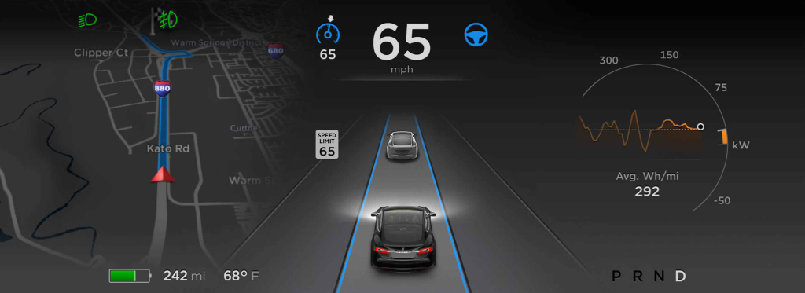] --- name: S2 # What Can We Measure? .left-column[ - Battery temperature, voltage and current can be measured - Allow estimating the remaining capacity of the battery, drive power and if battery is operating safely - Can use temperature, voltage and current sensors - Wheel speed and acceleration can be measured - Allow estimating the speed and acceleration of the vehicle - Can use a tachometer or feedback from motor - User inputs can be measured - For example pushing brake pedal, turning-on indicators, etc. - Location of the car can be evaluated - Allow navigation, obstacle detection, speed estimation, etc. - Can use GPS, LIDAR, cameras, etc. ] .right-column[ .center[ .zoom175[ 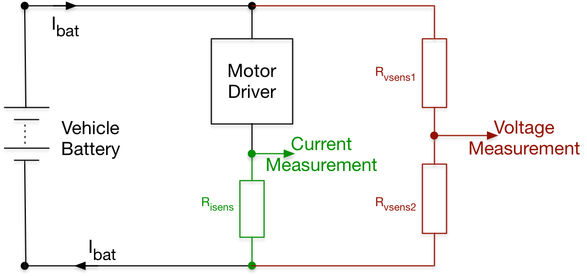 ] .zoom175[ 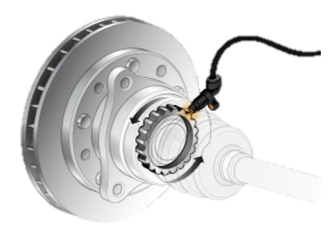 ] .zoom175[ 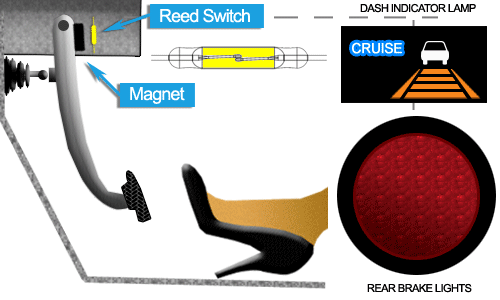 ] ] ] --- name: S3 # How to Convert Measured Signals to Useful Data? - A small computer can be used to collect the data from all our sensors and convert them to useful information - For example, the computer can read the outputs from the voltage and current sensors and calculate important information like the remaining battery capacity or the drive power - The output from most of our sensors are in analog form but the computer can only understand digital numbers - We need to convert the output from our sensors to digital numbers (i.e. 1s and 0s) - An Arduino Nano can be used as the small computer as it has built in ability to convert analog signals to digital numbers - A circuit that has a temperature sensor, voltage sensor, current sensor, LCD display and an Arduino Nano computer can be built using modules readily available to buy - You can also use a Bluetooth module to send information wirelessly to a computer/phone - You can connect other sensors like a tachometer or a brake sensor to add further functionality --- name: S4 # An Example: EvoSens Board .center[ 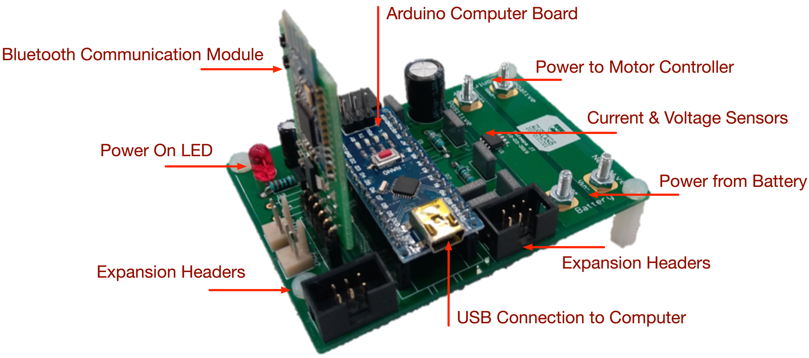 ] --- name: S5 # How Can We Display Measured Signals? .left-column[ - A [HD44780 type LCD panel](https://www.arduino.cc/en/Tutorial/LiquidCrystalDisplay) can be used to display information to the driver - LEDs can be used for indicators - For example, brake lights, warning indicators, turning indicators, etc. - A mobile phone/tablet connected using Bluetooth can also be used as a 'fancy' dashboard - Involves developing a mobile app using a tool such as [AppInventor](http://appinventor.mit.edu/explore/) - An IoT platform can be used to log data and view this data remotely - [ThingSpeak](https://thingspeak.com) provides a free service - Data can be used to improve the performance of your vehicle ] .right-column[ .center[ 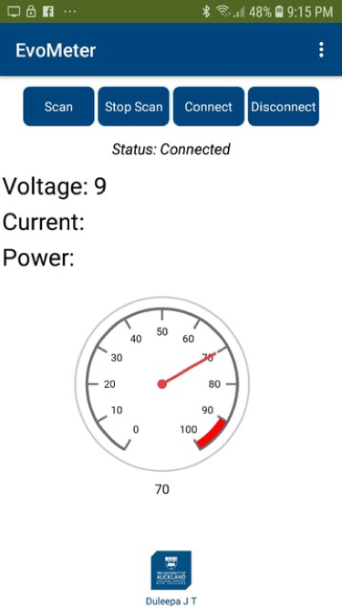 ] ] --- name: S6 # System We Plan to Build <br> .center[ <img src="img/SystemPicture2.png" class="noborder" alt="System Picture" height="300px"/> ] --- name: S7 # System Diagram of the Build - When engineering a complex system, we divide it into more manageable smaller problems - Each smaller problem to solve is shown as a block/box - Connected boxes show the complete system we plan to build .center[ 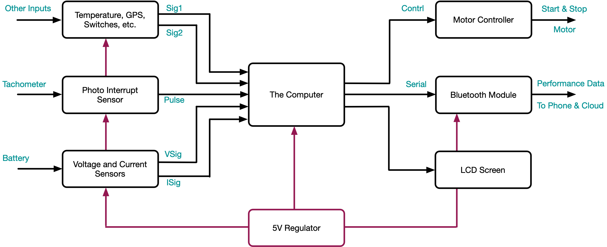 ] --- class: title-slide layout: false count: false .logo-title[] # Building an Electronic Circuit ### Learning to Use a Breadboard --- layout: true name: template_slide .logo-slide[] .footer[[Duleepa J Thrimawithana](https://www.linkedin.com/in/duleepajt), Department of Electrical, Computer and Software Engineering (2019)] --- name: S8 # How Can We Build a Circuit Quickly? .left-column[ - We need a way to connect electronic components together to build a circuit - This is typically done by soldering the components on to a printed circuit board (PCB) - If you had to build a simple circuit quickly how will you do this? - Getting a PCB made takes time - A breadboard can be used to help build a circuit quickly - Component legs are inserted into holes in order to make connections with other components - Holes are electrically connected with other holes as indicated in the diagram - Alternatively you can use a Veroboard ] .right-column[ .center[ .zoom175[ 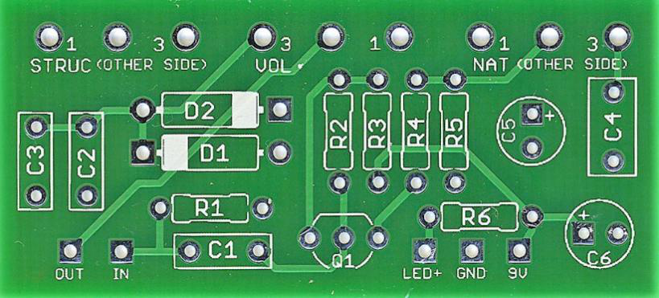 ] .zoom175[ 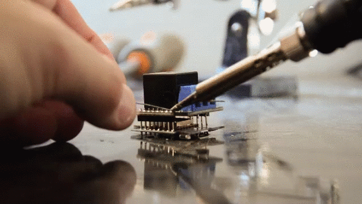 ] .zoom175[ 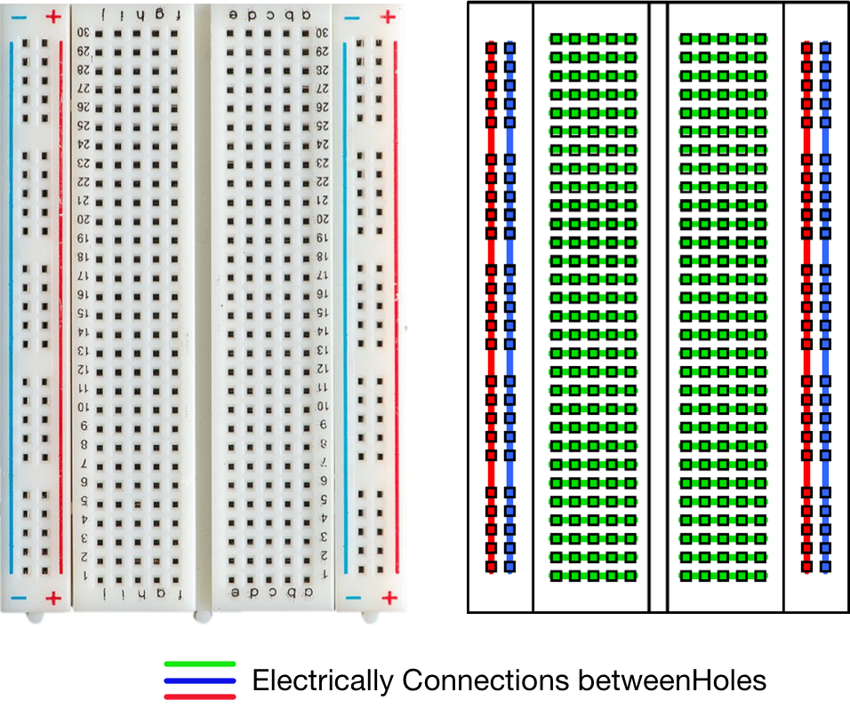 ] ] ] --- name: S9 # Building an LED Circuit with On/Off Switch - Lets assume we want to build a circuit that lets us turn-on and turn-off an LED with a switch - When the switch is closed by pressing the knob, 5 V from the battery is applied lighting the LED - A push-button, an LED and a resistor can be assembled on a breadboard to create this circuit - The resistor limits the current through the LED and therefore controls its brightness - Lets first simulate this in Proteus before building the circuit to make sure it works - How can we make the LED brighter or can we add more LEDs? .center[ 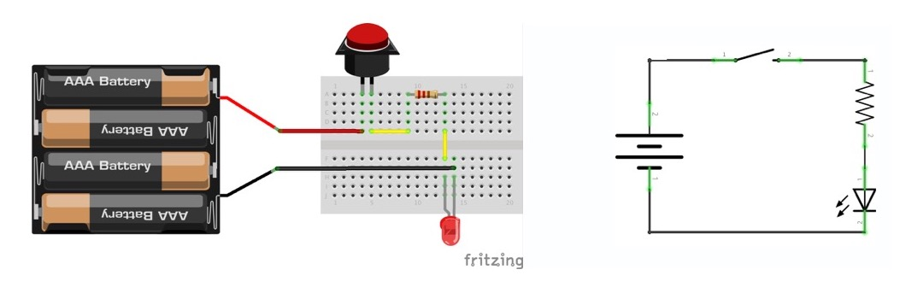 ] --- name: S10 # Building a Voltage Sensor Circuit .left-column[ - Battery voltage is too high to measured by an Arduino computer - The voltage sensor steps-down the battery voltage to a value that can be measured by the Arduino computer - A voltage sensor can be made using two resistors that form a voltage divider - Voltage at the mid point of the divider (sensor) is \\[\text {Measurement} = \text {Battery Voltage} \times \frac {R\_{VSENS2}} {R\_{VSENS1} + R\_{VSENS2}} \\] - Lets build a voltage sensor to measure the voltage of a 24V battery - Use `\( 1k\Omega \)` and `\( 7k\Omega \)` resistors to step-down the voltage to 3V - Before building this circuit use a multimeter in Proteus to confirm your circuit works ] .right-column[ .center[ 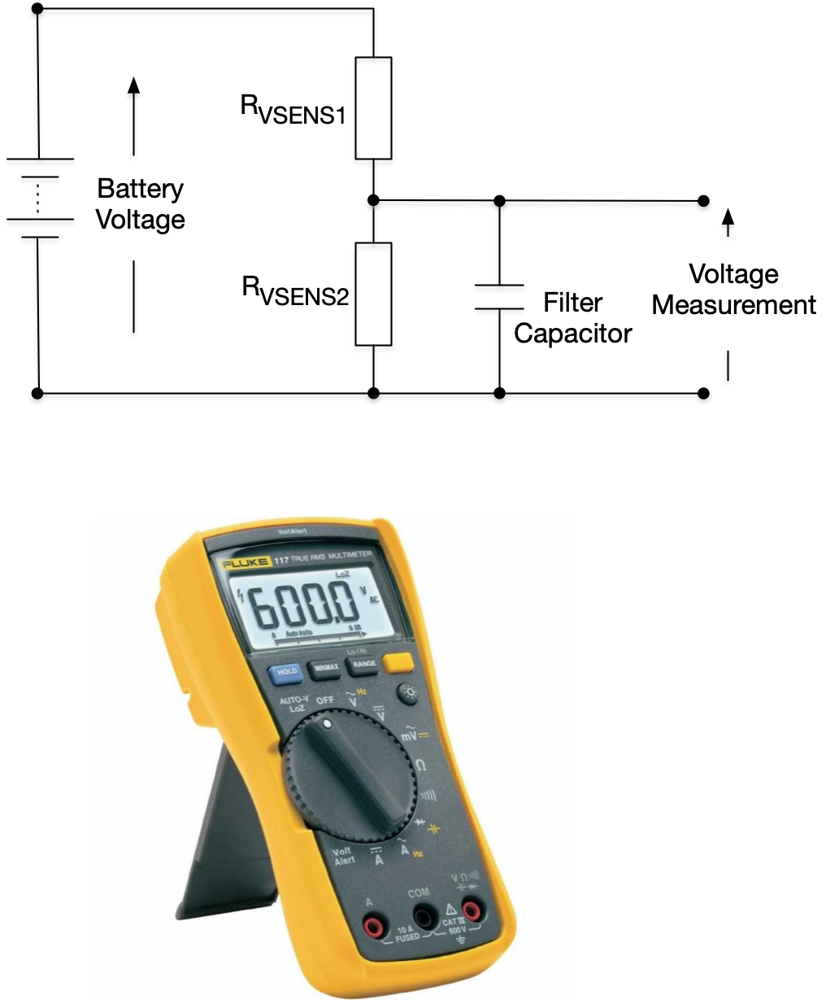 ] ] --- class: title-slide layout: false count: false .logo-title[] # Programing Fundamentals ### Learning to Use Arduino IDE --- layout: true name: template_slide .logo-slide[] .footer[[Duleepa J Thrimawithana](https://www.linkedin.com/in/duleepajt), Department of Electrical, Computer and Software Engineering (2019)] --- name: S11 # What is a Computer? .right-column2[ - A computer is an electronic device that can *receive, process, and store data* - A computer has a processor which can manipulate the data by adding, dividing, subtracting, etc. - The inputs are recieved from for example, keyboard, mice, mic, etc. - The data is stored in memory ] .left-column2[ .center[ 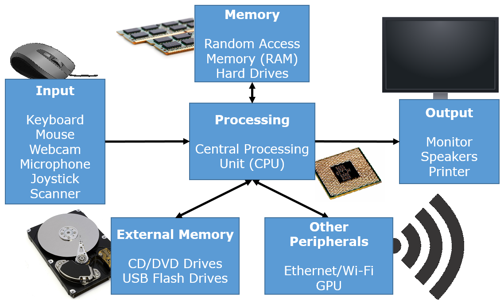 ] ] --- name: S12 # Computers .center[ <img src="img/Computers.png" class="noborder" alt="Computer Types" width="800px"/> ] --- name: S13 # Which Computer Should We Use? .right-column2[ - A microcontroller is the most suitable computer for your system - An _embedded_ computer - Low power consumption - Sufficient processing power - Useful in-built peripherals including an analog to digital conversion (ADC) circuit - Cheap and easy to use - An Arduino Nano is suitable for our project - It is a microcontroller (micro-computer) ] .left-column2[ .center[ 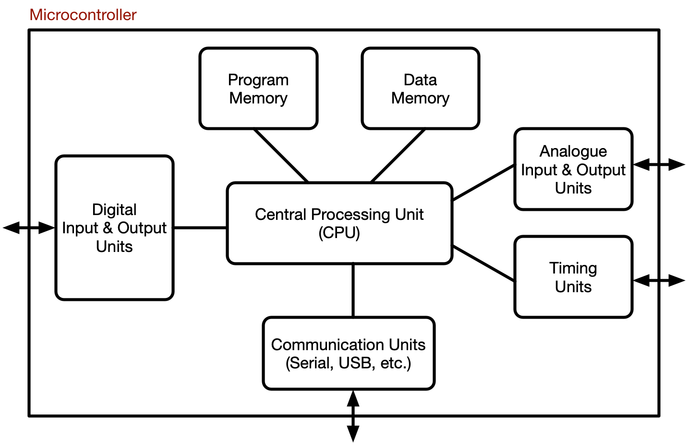 ] ] --- name: S14 # How to Make Our Microcontroller Think? - Use *variables* and *conditionals* to implement *algorithms* - A variable is used to store data and has a type like *int* and *char* - Conditionals are used to make decisions using statements like *if* and *else* together with logical operators that are used to compare variables - Loops are used to repeat a set of instructions - *for* and *while* loops are commonly used - Instructions are written in a low level programming language such as C - Program is organized into *functions* for our sanity - Use comments to explain what each part of the program does - Compilers convert the program to machine code that the microcontroller can understand - Machine code is loaded to the microcontroller - We call this "programming the microcontroller" - Using programming hardware --- name: S15 # Arduino Nano and Arduino IDE .left-column[ - Arduino Nano is the recommended micro-computer for this project - Arduino Integrated Development Environment (IDE) provides a simplified interface to write your software program - An Arduino program is called a *sketch* - There are many useful Arduino libraries to simplify programing - Easy use of peripherals and shields - Many examples and abundant support forums - Your software can be written in a C language - The Arduino Nano micro-computer board we will use has - An 8-bit microcontroller (ATMega328P) made by Atmel - Many digital and analogue pins + a USB programmer - Cheap (~$12) ] .right-column[ .center[ <br> 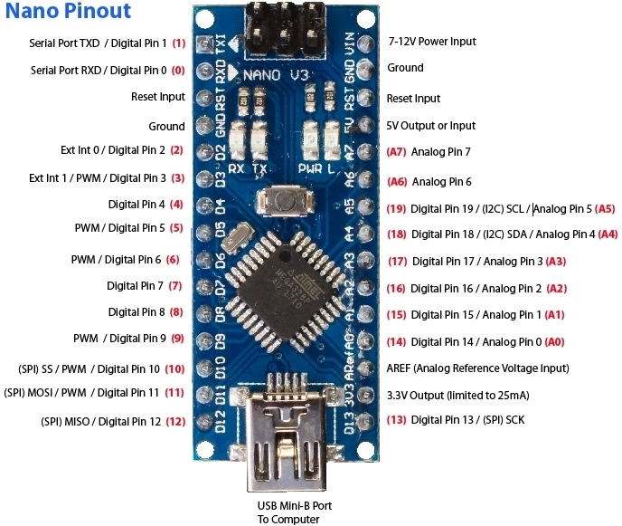 ] ] --- name: S16 # Using Arduino IDE to Program Arduino Nano .right-column3[ - Connect the Arduino Nano board to the PC using USB cable - Tell Arduino about the board you use - Go to Tools > Board and select "Arduino Nano" - Go to Tools > Processor and select "ATMega328P (Old Bootloader)" - Go to Tools > Port and select the correct one - You can use an example program provided in Arduino IDE for testing - Lets open the *Blink* example, from File > Examples > Basics > Blink - Compile, and upload (program) to verify it works ] .left-column3[ .center[ 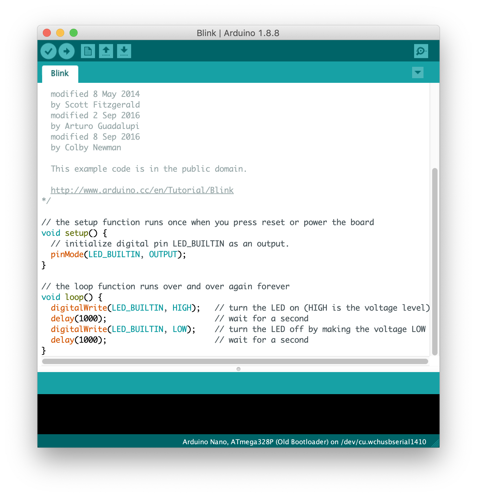 ] ] --- class: title-slide layout: false count: false .logo-title[] # Learning to Programing ### Writing Simple Programs for an Ardunio --- layout: true name: template_slide .logo-slide[] .footer[[Duleepa J Thrimawithana](https://www.linkedin.com/in/duleepajt), Department of Electrical, Computer and Software Engineering (2019)] --- name: S17 # Turning an LED On and Off with Arduino (P-I) .left-column[ - In the circuit we learnt that use a push-button was used to turn the LED on and off - Pushing the button supplied 5V through a resistor to an LED turns it on - Releasing the button removed the 5V supply turns the LED off - Can we use an Arduino microcontroller to automate this process? - When a digital pin is set to produce a logic high output it behaves like a turned-on switch and supplies 5V - When a digital pin is set to produce a logic low output it behaves like turned-off switch and supplies 0V - Thus a digital pin can replace the push-button - Lets experiment this in Proteus by connecting the anode of LED through a resistor to pin 6 while the cathode is grounded ] .right-column[ .center[ <img src="img/ledblink.gif" class="noborder" alt="LED Blink Animation" width="220px"/> 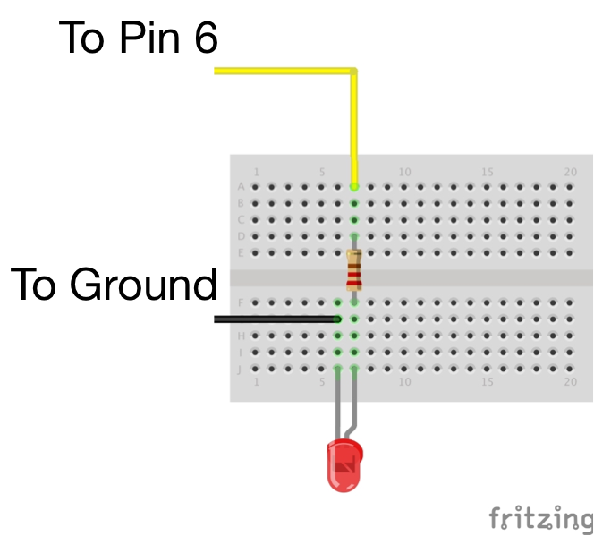 ] ] --- name: S18 # Turning an LED On and Off with Arduino (P-II) .left-column2[ - In your program first 'setup' pin 6 as an output pin - Pin 6 can now produce 5V (logic high) or 0V (logic low) similar to switch turning on or off - We could also 'setup' a digital pin to read digital inputs - We will look at an example later - To blink the LED, flip the digital pin between 5V and 0V every 1s - 5V is produced by writing a logic high to the digital pin - Keep 5V on for 1s by 'delaying' 1s - 0V is produced by writing a logic low to the digital pin - Keep 0V on for 1s by 'delaying' 1s - Tell program to 'loop' indefinitely through this program - Test this in Proteus ] .right-column2[ .center[ 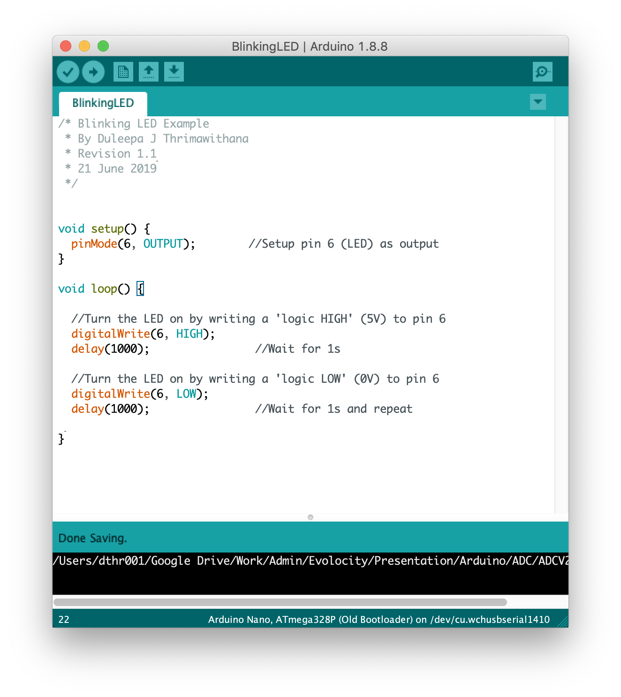 ] ] --- name: S19 # Communicating with a PC (P-I) .left-column[ - Microcontrollers communicate with other devices through many methods - Examples include USB, HDMI, Serial, CAN, etc. - *Serial* provides a simple way to send/receive messages - Send/receive a stream of logic-highs and lows over a wire - Most devices, communicates with the microcontroller using serial - Examples include PC/laptop, Bluetooth modules, screens, etc. - Lets get the Arduino Nano to display your name on the PC screen - In your program, first 'setup' *Serial* communication at a speed of 9600 bps - In the loop, using *Print* function send your name to the PC every second - Use Proteus *Serial Monitor* to display message on the PC ] .right-column[ .center[ 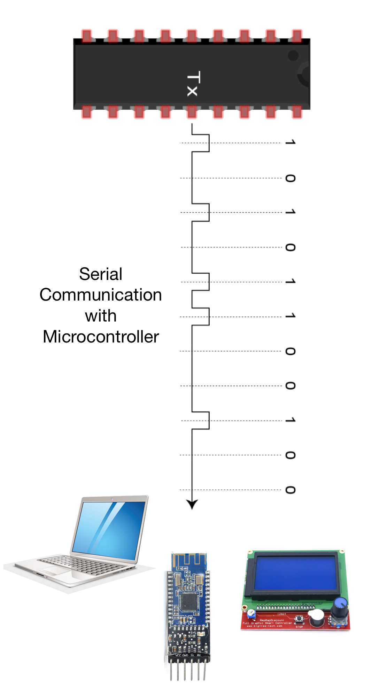 ] ] --- name: S20 # Communicating with a PC (P-II) .center[ 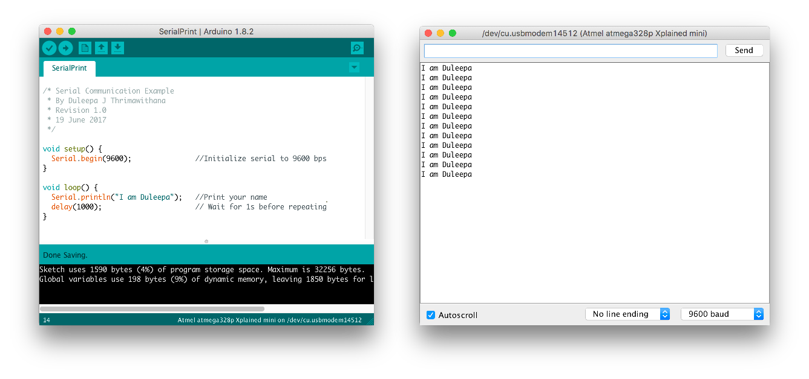 ] --- name: S20 # Variables and Logic Statements .left-column2[ - Variables act as memory to store values, similar to math - There are different variable types - Integer, character, float, string, unsigned int, etc. - Crucial to define the correct type of variable - Variables 'A' and 'B' that hold an integer number can be defined as *int A* and *int B* - 'A' can be assigned a value as `\( \text {A=2*B or A=10} \)` - *if* and *else* statements can be used to make decisions - Logic operators compare variables - Equal (A==B), not equal (A!=B) - Greater than `\( \text {(A > B)} \)`, Less than `\( \text {(A < B)} \)` - AND (A&&B), OR (A||B) ] .right-column2[ .center[ 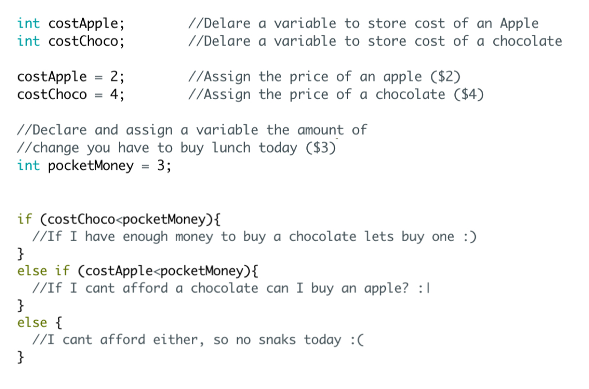 ] ] --- name: S21 # Challenge 1 Lets make a very simple stopwatch using the Arduino. In this stopwatch every time a push-button is pressed it resets the time to 0s and starts counting seconds. The time is displayed on the terminal. Can you write the software for this stopwatch? Here are some ideas, - First ignore the push-button and write software to count seconds up from 0s - Use a variable that is incremented every 1s and display this variable as it updates on the terminal - Confirm this software works using Proteus - Think about how your software can learn if the push-button is pressed or not? - Lets connect one end of a push-button to 5V and the other end to pin 5 so that pressing or releasing a push-button generate a digital signal at pin 5 (you may add a resistor and a capacitor from pin 5 to ground as a debouncer) - When pressed it produce 5V, which is a logic High, when released it has 0V, which is a logic Low - In your program first 'setup' pin 5 as a digital input and in 'loop' monitor pin 5 using 'digitalRead' - Every time the button is pressed (i.e. you read a logic High) reset the time --- class: title-slide layout: false count: false .logo-title[] # Starting Work on the Dashboard ### Measuring Battery Voltage & Current --- layout: true name: template_slide .logo-slide[] .footer[[Duleepa J Thrimawithana](https://www.linkedin.com/in/duleepajt), Department of Electrical, Computer and Software Engineering (2019)] --- name: S22 # Variables and Logic Statements .left-column2[ - Variables act as memory to store values, similar to math - There are different variable types - Integer, character, float, string, unsigned int, etc. - Crucial to define the correct type of variable - Variables 'A' and 'B' that hold an integer number can be defined as *int A* and *int B* - 'A' can be assigned a value as `\( \text {A=2*B or A=10} \)` - *if* and *else* statements can be used to make decisions - Logic operators compare variables - Equal (A==B), not equal (A!=B) - Greater than `\( \text {(A > B)} \)`, Less than `\( \text {(A < B)} \)` - AND (A&&B), OR (A||B) ] .right-column2[ .center[ ] ] --- name: S23 # Digital and Analog Signals .left-column[ - Binary signals that correspond to a logic high (true) or logic low (false) are called digital signals - A logic high is (usually) 5V and a logic low is 0V - Digital signals are read using a digital pin on a microcontroller - Need to setup the pin as an 'input' pin - Continuous voltage signals that change over time are called analog signals - A microcontroller reads the analogue signals using specific analog pins, which are connected to an Analogue to Digital converter (ADC) of a microcontroller - An ADC convert an analog signal to a digital (integer) number - Microcontrollers typically have built in ADCs - Higher ADC resolution improves accuracy ] .right-column[ .center[ 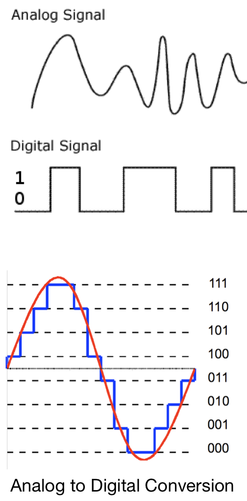 ] ] --- name: S24 # How Does an ADC Work? .left-column[ - The analogue pins A0 to A7 of the Arduino Nano are connected to Arduino Nano's Analogue to Digital converter (ADC) unit - For example, the analogue voltage at pin A0 can be read by the Arduino using the command analogRead(A0) - The value this command gives you is an integer number since computers love integers - We need to use mathematics to find out actual voltage - ADC converts a voltage between 0V & 5V to an integer between 0 & 1023 - For example, 2.5V and A0 will be read by Arduino as 512 - How to use mathematics so that Arduino knows the actual voltage? - What we get from analogRead(A0) need to divided by 1023 and multiplied by 5 ] .right-column[ .center[ 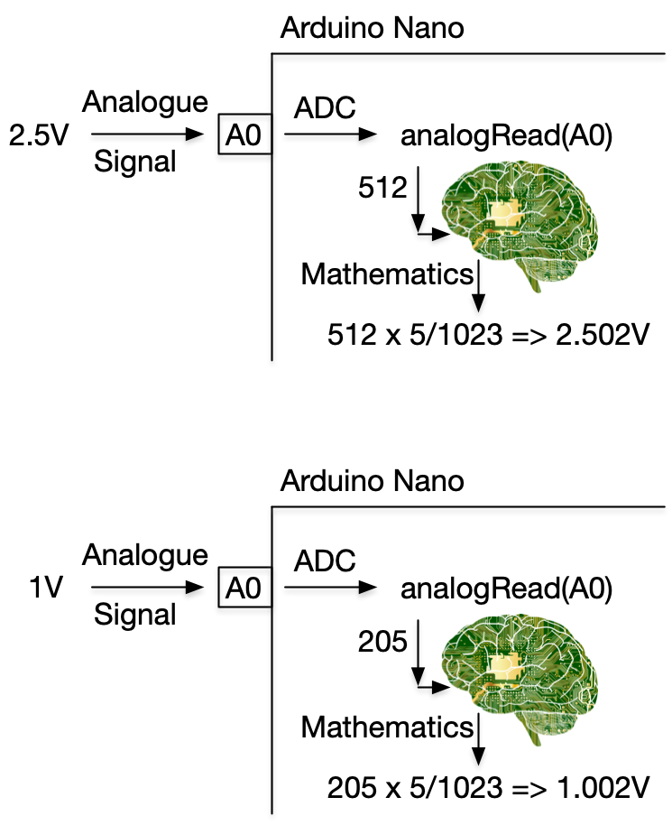 ] ] --- name: S25 # Building a Voltage Sensor Circuit .left-column[ - Battery voltage is too high to be measured by an Arduino - The voltage sensor steps-down the battery voltage to a value that can be measured by the Arduino computer - A voltage sensor can be made using a voltage divider - Voltage at the mid point of the divider (sensor) is \\[\text {Measurement} = \text {Battery Voltage} \times \frac {R\_{VSENS2}} {R\_{VSENS1} + R\_{VSENS2}} \\] - Lets build a voltage sensor to measure the voltage of a 24V battery - Use `\( 1k\Omega \)` and `\( 23k\Omega \)` resistors to step-down the voltage to 1V - Use a voltmeter in Proteus to confirm - We need to keep the current through the voltage sensor circuit small (ideally less than 1mA) ] .right-column[ <br> .center[ .zoom175[ <img src="img/VoltageDivProteus.png" class="noborder" alt="Voltage Divide" width="300px"/> ] ] ] --- name: S26 # Building a Current Sensor Circuit .left-column[ - Battery current needs to be converted to a voltage to be measured by an Arduino - A current sensor integrated circuit (IC) can be used for this - Current sensor ICs can be bought that suit the range of current you plan to measure - Lets use an IC called the ACS712 - The output of ACS712 is a voltage proportional to current through \\[\text {Measurement} = \text {Battery Current} \times 0.066 + 2.5V \\] - The connection between battery and the motor controller (+ motor) can be split to insert the ACS712 in the path of the current - ACS712 needs a 5V and ground (GND) connection - Use a voltmeter in Proteus to confirm ] .right-column[ .center[ .zoom175[ 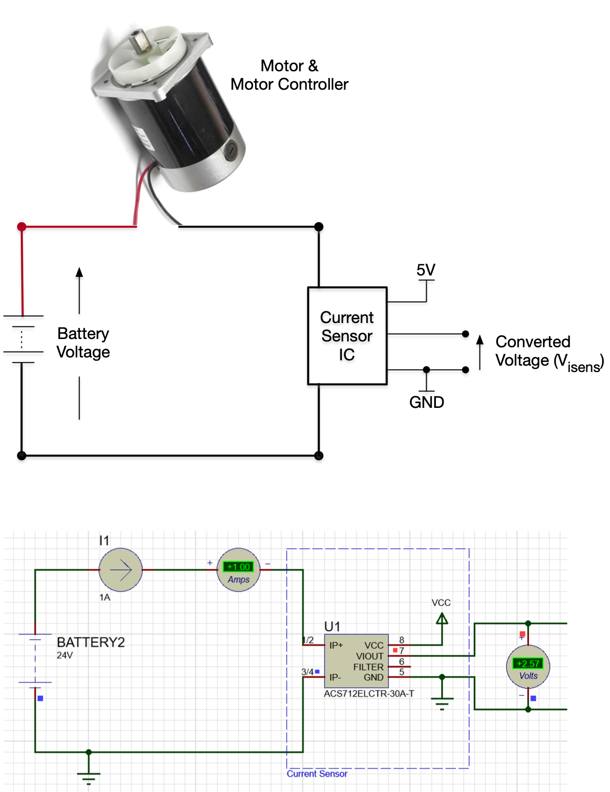 ] ] ] --- name: S27 # Measuring the Battery Voltage (P-I) - Lets write a software program to measure the voltage of you 24V battery and display it on the PC screen - In your real design this may be using a 24V or the 48V vehicle battery - A circuit is setup in Proteus using a voltage divider as a sensor to step-down the battery voltage by 1/24 - This is because `\( R_{VSENS1} = 23k\Omega \)` and `\( R_{VSENS2} = 1k\Omega \)` - In your program, first 'setup' *Serial* communication at 9600 bps so we can display battery voltage on PC - Output of the voltage sensor is connected to A0 pin - Read the voltage at A0 using *AnalogRead* - *AnalogRead* converts a 0V to 5V signal at A0 to a number between 0 and 1023 - To get the actual voltage we have to multiply the result by 5 and divide by 1023 - We also have to multiply this number by 24/1 to get the actual battery voltage by reversing the step-down introduced by the voltage sensor - Read and display the battery voltage on PC every 1s --- name: S28 # Measuring the Battery Voltage (P-II) .center[ 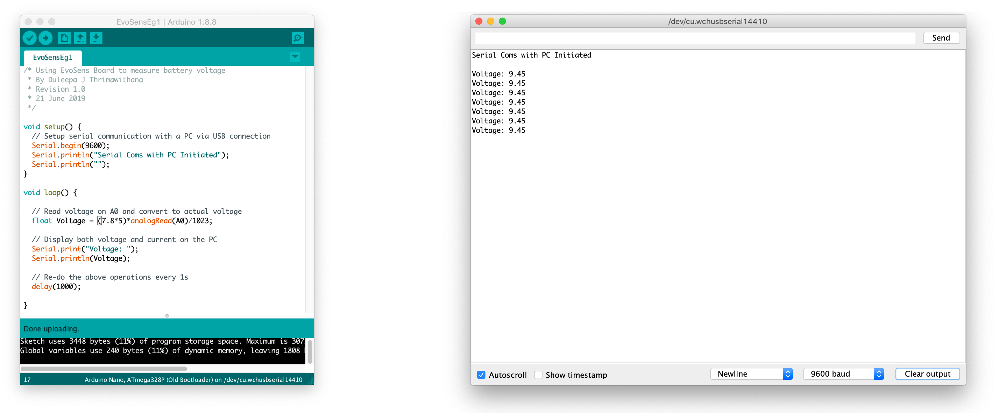 ] --- name: S29 # Measuring Current (P-I) - Lets write a software program to measure the current drawn from the 24V battery and display it on the PC screen - For this purpose, we are using an integrated circuit (IC) called “ACS712”, which measures the current flowing from the battery to the motor controller and convert this current to a voltage between 0V and 5V - The output of the ACS712 IC is connected to pin A1 of the Arduino Nano in Proteus - The ACS712 IC produces 2.5V when the current is 0A - The ACS712 IC produces 0.066V per each 1A flowing through it - For example, if the current flowing through it is 10A then the voltage produced by the ACS712 will be 3.16V (i.e. 2.5V + 0.066 x 10A) - Note that the ACS712 IC may not produce exactly 2.5V when current is 0A - We can measure this value using the Arduino Nano and use it in our calculations to improve the accuracy of the measurement - Lets also add the battery voltage measure in to the same program so both the current and voltage is displayed on PC screen --- name: S30 # Measuring Current (P-II) .center[ 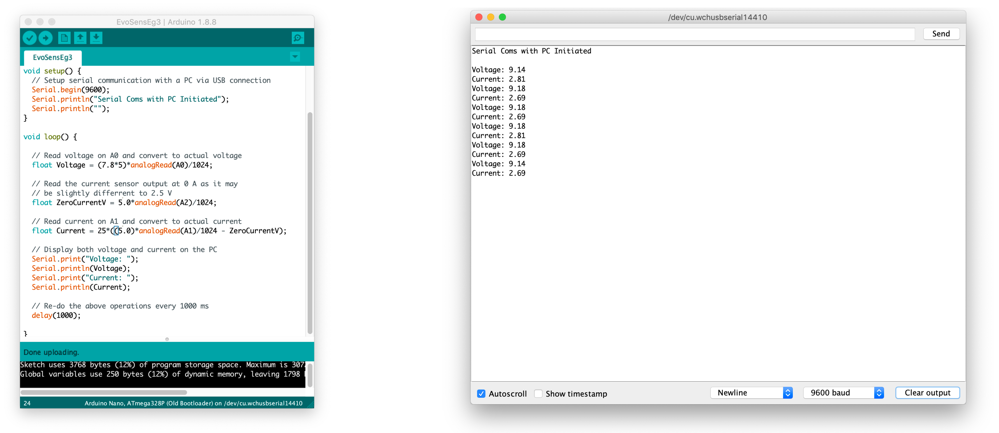 ] --- name: S21 # Challenge 2 Lets now combine the work so far so we can measure and display the battery voltage and current drawn by the motor controller when the cart is running. Here are some ideas, - A model of the motor, motor controller and the battery is given in the Proteus - You can change the position of the accelerator to change the speed of the cart - Run the simulation and observe change in speed and battery current. Why does the current go negative when you reduce speed? - How would you add the voltage and current sensors we designed to measure battery voltage and current - To help in Proteus the region where the sensors should be added is highlighted - Copy and paste the voltage and current sensors we worked on and attach to the battery supplying the motor controller - Remember to update the labels to avoid two `\( V_{Vsens} \)` signals feeding A0 pin - Similarly update the labels to avoid two `\( V_{Isens} \)` signals feeding A0 pin - Also measure and display the 2.5V signal available at the VIOUT pin of the ACS712 --- exclude: true name: S31 # Detecting Push-Button Press with Arduino .left-column2[ - Pressing or releasing a push-button generate a digital signal - When pressed it produce 5V, which is a logic High - When released it has 0V, which is a logic Low - Note: some circuits may use reverse logic ('active low') - Using the breadboard connect one end of push-button to 5V and the other end to pin 5 - You may add a resistor and a capacitor from pin 5 to ground as a debouncer - In your program first 'setup' pin 5 as a digital input pin - Loop indefinitely while monitoring the digital pin 5 - Store input in an integer variable 'switchInput' - Output 'switchInput' to pin 6 connected to LED ] .right-column2[ .center[ .zoom175[ 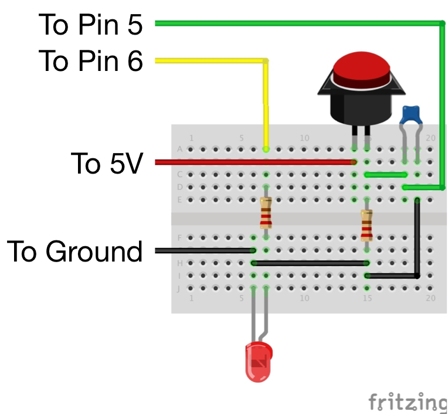 ] .zoom175[ 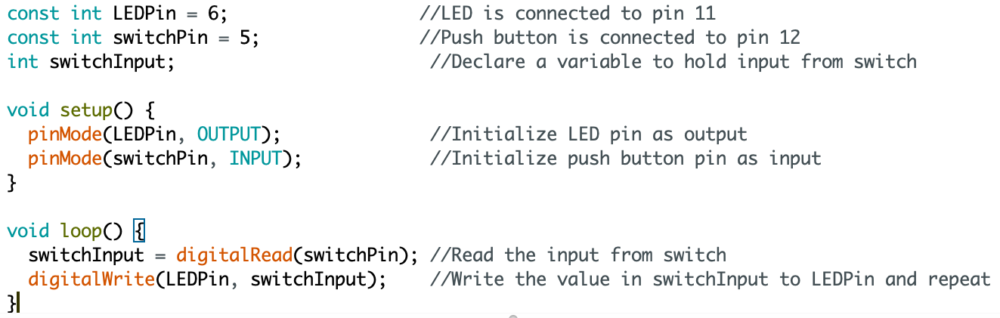 ] ] ] --- exclude: true name: S22 # Toggling the LED with Button Press .right-column2[ - Lets toggle an LED on or off at a push-button press - Use an *if* statement to check if pin 6 attached to the button is logic-high - If logic-high, then change the state of the LED - We need to set a *flag* to make sure LED is not toggled if button is kept pressed - We don't toggle the LED if the *flag* is high - If logic-low, reset the *flag* if the button is released ] .left-column2[ .center[ 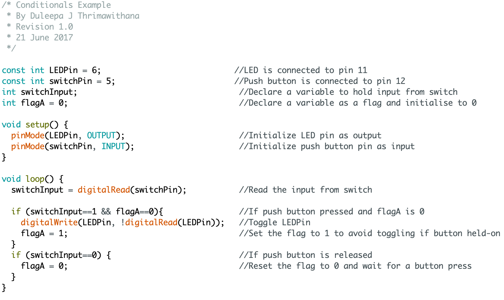 ] ] --- exclude: true class: title-slide layout: false count: false .logo-title[] # Using the EvoSens Board ### Displaying Battery Voltage on Laptop Screen --- exclude: true layout: true name: template_slide .logo-slide[] .footer[[Duleepa J Thrimawithana](https://www.linkedin.com/in/duleepajt), Department of Electrical, Computer and Software Engineering (2019)] --- exclude: true name: S27 # Bluetooth Communication with Phone (P-I) - Bluetooth modules can communicate with the Arduino Nano using serial - Since we already use the default serial to communicate with PC we have to use a software serial - Fortunately, we are going to use an existing software called AltSoftSerial to help us - Go to Tools > Manage Libraries, find AltSoftSerial and install it so we can use it in our project - We can now setup AltSoftSerial communication at 9600 bps to communicate with the Bluetooth module - Connect the Bluetooth module to header pins labeled “P1” - Lets have a counter that counts up every second upto 10 and send this counter value to the phone - The phone will receive the counter value every second - Display the counter value also on the PC so we can *debug* our code - On your phone, download a *BluetoothLE* app to view the message sent by the Arduino - Once you pair the Bluetooth module with the phone via the BluetoothLE app, the blinking red light will stay on indicating successful pairing --- exclude: true name: S28 # Bluetooth Communication with Phone (P-II) .center[ 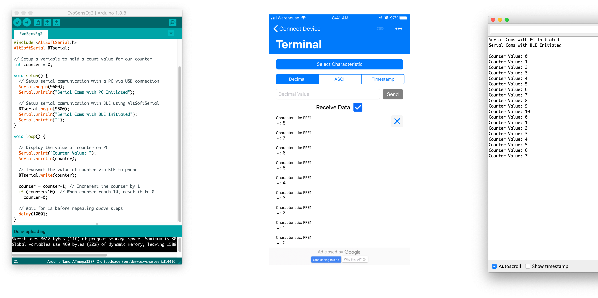 ] --- class: title-slide layout: false count: false .logo-title[] # Acknowledgements #### Special thanks to Wai Yeung, Ryan Kurte, Andrew Chen & Hamish O'Neill from the #### Electrical, Computer & Software Engineering department at The University of Auckland #### for their support in preparing this material. --- class: title-slide layout: false count: false .logo-title[] # Questions? ### Thank you